Paintings & Prints
Alpine Lake Reflection
· 21st century
Price Upon Request
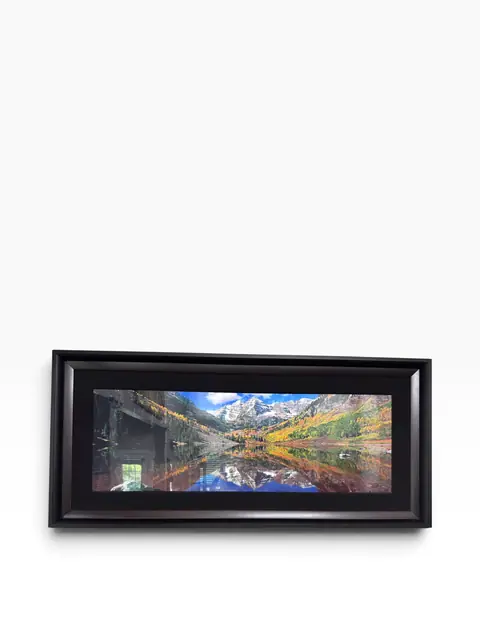
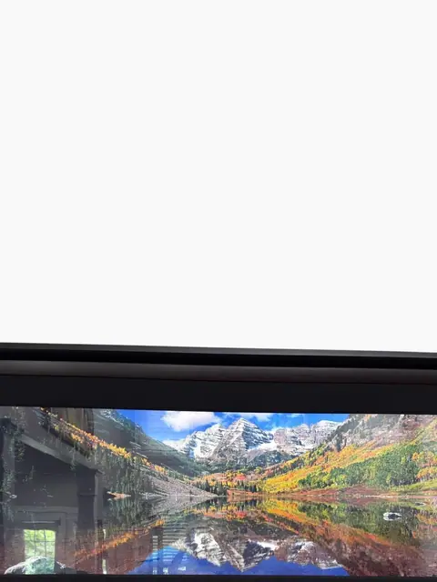
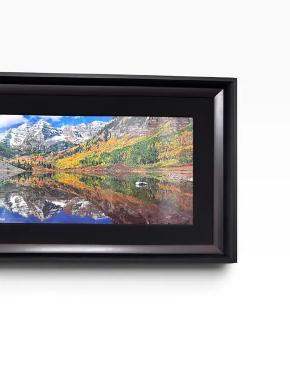
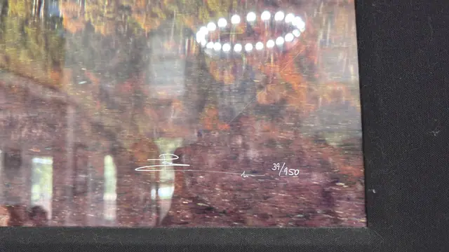
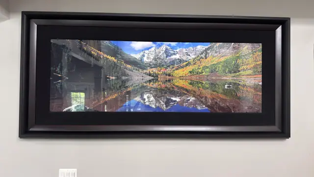

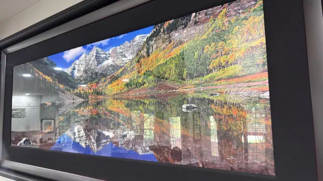
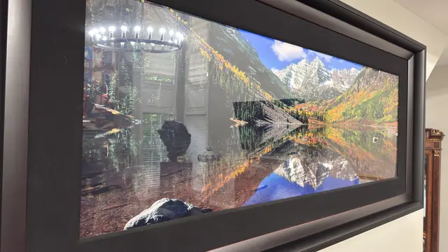
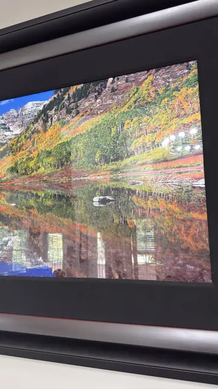
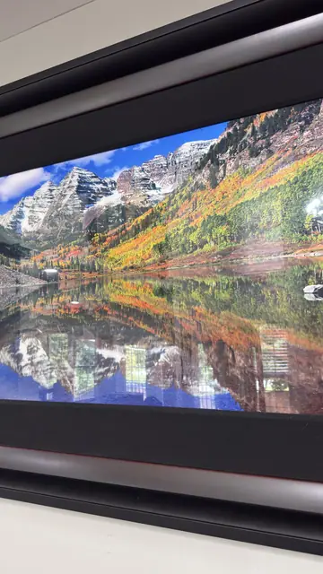
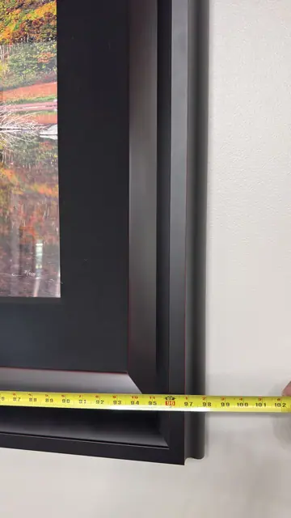
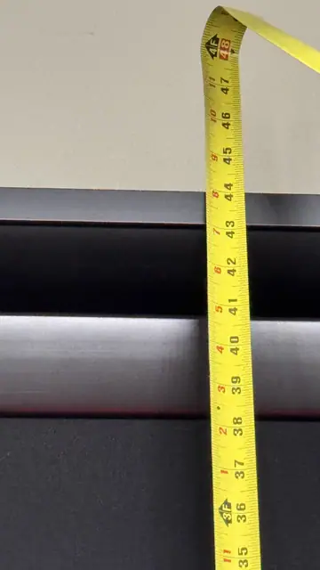
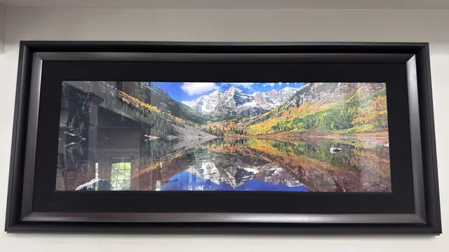
About the Item
Snow-capped peaks mirrored in glass-still water, ringed by autumn aspens in full gold — a breathtaking panoramic photograph of an Alpine lake at the peak of fall colour. Professionally framed in black with a wide dark mat, this wide-format print brings the grandeur of the high mountains indoors. A calming, cinematic landscape statement. No signature visible; photographer unknown. The scene resembles the Maroon Bells / Maroon Lake, Colorado, but this is an observation, not a verified location. Contemporary digital-print quality suggests a 21st-century print (inference). Tape-measure photos are partial/ambiguous — dimensions listed as not legible.
Details
- Creation Year:
- 21st century
- Medium:
- Photographic print
- Period:
- 21St
- Condition:
- Offered in the condition shown in the photographs.
- Reference Number:
- VO-304